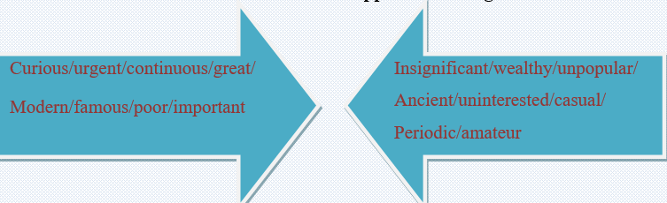
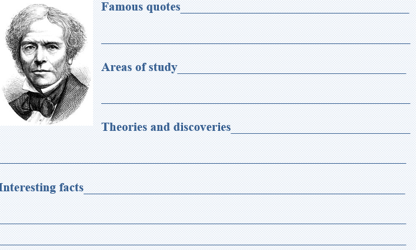

Born in 1791 to a poor family in England, Michael Faraday was extremely curious, questioning everything. He felt an urgent need to know more. At age 13, he became an errand boy for a bookbinding shop in London. He read every book that he bound, and decided that one day he would write a book of his own. He became interested in the concept of energy, specifically force. Because of his early reading and experiments with the idea of force, he was able to make important discoveries in electricity later in life. He eventually became a famous chemist and physicist.
Faraday built two devices to produce what he called electromagnetic rotation: that is a continuous circular motion from the circular magnetic force around a wire. Ten years later, in 1831, he began his great series of experiments in which he discovered electromagnetic induction. These experiments form the basis of modern electromagnetic technology.
Michael Faraday, one of the world's greatest experimental physicist, is known as the father of the electric motor, electric generator, electric transformer, and electrolysis. He wrote the "Law of Induction" and is known for the "Faraday Effect". Two units in physics were named in his honor, the farad (for capacitance) and the faraday (as a unit of charge).
Task1 Reading
🔸Michael Faraday was born in a rich family.
🔸At the age of 13, he became interested in the concept of energy.
🔸He could not read every book that he bound.
🔸As he did lots of reading and experiments with the idea of force, he was able to make important discoveries in electricity.
🔸He constructed two devices to produce electromagnetic rotation.
🔸In 1831, he discovered electromagnetic induction.
🔸His book “Law of Induction” is also known for the “Faraday Effect”.
🔸The farad and the faraday were named in his honor.
Task2 Vocabulary
Match the words from the text with their opposite meaning.

Task3 Writing
Do some research and fill the information on the table.
